File: 000600.gt.txt (if the image is defective, simply delete all Arabic text and the line will be excluded)
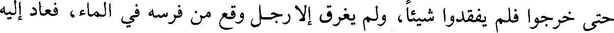
حتى خرجوا فلم يفقدوا شيئا، ولم يغرق إلا رجل وقع من فرسه في الماء، فعاد إليه
File: 000601.gt.txt (if the image is defective, simply delete all Arabic text and the line will be excluded)
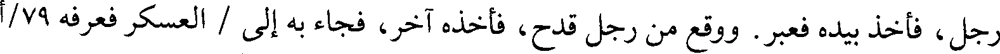
رجل، فأخذ بيده فعبر. ووقع من رجل قدح، فأخذه آخر، فجاء به إلى / العسكر فعرفه 79/أ
File: 000602.gt.txt (if the image is defective, simply delete all Arabic text and the line will be excluded)
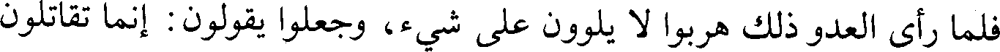
فلما رأى العدو ذلك هربوا لا يلوون على شيء، وجعلوا يقولون : إنما تقاتلون
File: 000603.gt.txt (if the image is defective, simply delete all Arabic text and the line will be excluded)
148
File: 000604.gt.txt (if the image is defective, simply delete all Arabic text and the line will be excluded)
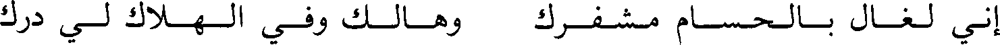
إني لغال بالحسام مشفرك وهالك وفي الهلاك لي درك
File: 000605.gt.txt (if the image is defective, simply delete all Arabic text and the line will be excluded)
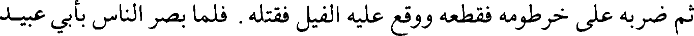
ثم ضربه على خرطومه فقطعه ووقع عليه الفيل فقتله. فلما بصر الناس بأبي عبيد
File: 000606.gt.txt (if the image is defective, simply delete all Arabic text and the line will be excluded)
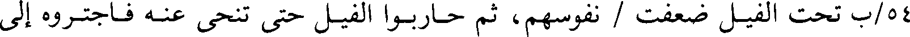
45/ب تحت الفيل ضعفت / نفوسهم، ثم حاربوا الفيل حتى تنحى عنه فاجتروه إلى
File: 000607.gt.txt (if the image is defective, simply delete all Arabic text and the line will be excluded)
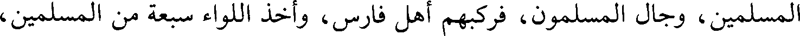
المسلمين، وجال المسلمون، فركبهم أهل فارس، وأخذ اللواء سبعة من المسلمين،
File: 000608.gt.txt (if the image is defective, simply delete all Arabic text and the line will be excluded)
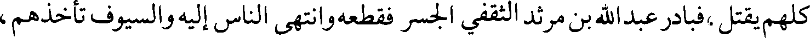
كلهم يقتل،فبادر عبد الله بن مرثد الثقفي الجسر فقطعه وانتهى الناس إليه والسيوف تأخذهم،
File: 000609.gt.txt (if the image is defective, simply delete all Arabic text and the line will be excluded)
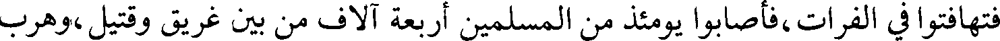
فتهافتوا في الفرات، فأصابوا يومئذ من المسلمين أربعة آلاف من بين غريق وقتيل،وهرب
File: 000610.gt.txt (if the image is defective, simply delete all Arabic text and the line will be excluded)
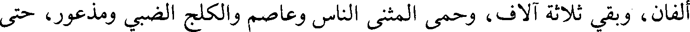
ألفان، وبقي ثلاثة آلاف، وحمى المثنى الناس وعاصم والكلج الضبي ومذعور، حتى
File: 000611.gt.txt (if the image is defective, simply delete all Arabic text and the line will be excluded)
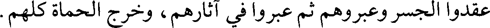
عقدوا الجسر وعبروهم ثم عبروا في آثارهم، وخرج الحماة كلهم.
File: 000612.gt.txt (if the image is defective, simply delete all Arabic text and the line will be excluded)
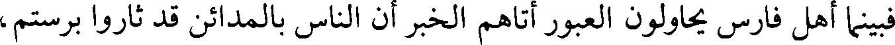
فبينما أهل فارس يحاولون العبور أتاهم الخبر أن الناس بالمدائن قد ثاروا برستم،
File: 000613.gt.txt (if the image is defective, simply delete all Arabic text and the line will be excluded)
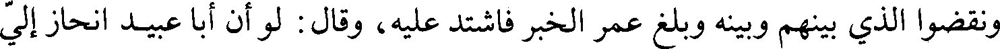
ونقضوا الذي بينهم وبينه وبلغ عمر الخبر فاشتد عليه، وقال : لو أن أبا عبيد انحاز إلي
File: 000614.gt.txt (if the image is defective, simply delete all Arabic text and the line will be excluded)
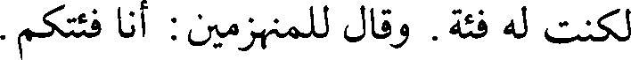
لكنت له فئة. وقال للمنهزمين : أنا فئتكم.
File: 000615.gt.txt (if the image is defective, simply delete all Arabic text and the line will be excluded)
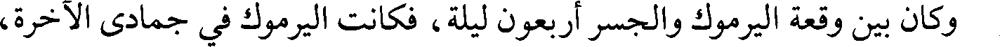
وكان بين وقعة اليرموك والجسر أربعون ليلة، فكانت اليرموك في جمادى الآخرة،
File: 000616.gt.txt (if the image is defective, simply delete all Arabic text and the line will be excluded)
قصة البويب(1)
File: 000617.gt.txt (if the image is defective, simply delete all Arabic text and the line will be excluded)
والجسر في شعبان.
File: 000618.gt.txt (if the image is defective, simply delete all Arabic text and the line will be excluded)
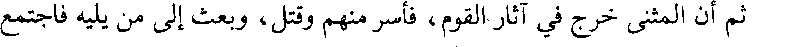
ثم أن المثنى خرج في آثار القوم، فأسر منهم وقتل، وبعث إلى من يليه فاجتمع
File: 000619.gt.txt (if the image is defective, simply delete all Arabic text and the line will be excluded)
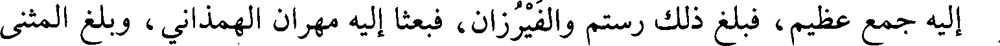
إليه جمع عظيم، فبلغ ذلك رستم والفيرزان، فبعثا إليه مهران الهمذاني، وبلغ المثنى
File: 000620.gt.txt (if the image is defective, simply delete all Arabic text and the line will be excluded)
[الخبر](2)، فجمع الناس بالبويب، فعبر مهران فنزل على شاطئ الفرات، فنادى
File: 000621.gt.txt (if the image is defective, simply delete all Arabic text and the line will be excluded)
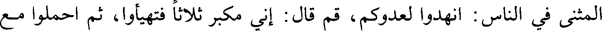
المثنى في الناس : انهدوا لعدوكم، قم قال : إني مكبر ثلاثا فتهيأوا، ثم احملوا مع
File: 000622.gt.txt (if the image is defective, simply delete all Arabic text and the line will be excluded)
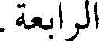
الرابعة.
File: 000623.gt.txt (if the image is defective, simply delete all Arabic text and the line will be excluded)
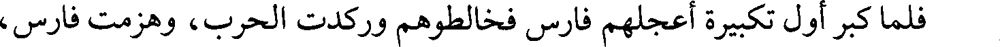
فلما كبر أول تكبيرة أعجلهم فارس فخالطوهم وركدت الحرب، وهزمت فارس،
File: 000624.gt.txt (if the image is defective, simply delete all Arabic text and the line will be excluded)
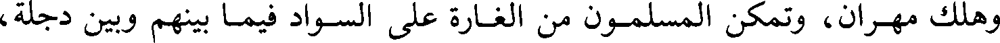
وهلك مهران، وتمكن المسلمون من الغارة على السواد فيما بينهم وبين دجلة،
File: 000625.gt.txt (if the image is defective, simply delete all Arabic text and the line will be excluded)
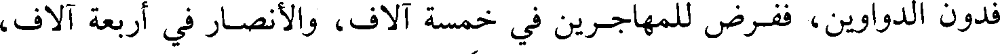
فدون الدواوين، ففرض للمهاجرين في خمسة آلاف، والأنصار في أربعة آلاف،
File: 000626.gt.txt (if the image is defective, simply delete all Arabic text and the line will be excluded)
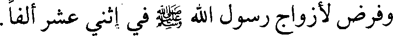
وفرض لأزواج رسول الله صلعم في إثني عشر ألفا.
File: 000627.gt.txt (if the image is defective, simply delete all Arabic text and the line will be excluded)
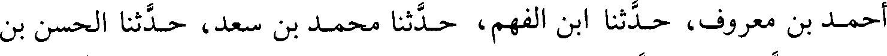
أحمد بن معروف، حدثنا ابن الفهم، حدثنا محمد بن سعد، حدثنا الحسن بن
File: 000628.gt.txt (if the image is defective, simply delete all Arabic text and the line will be excluded)
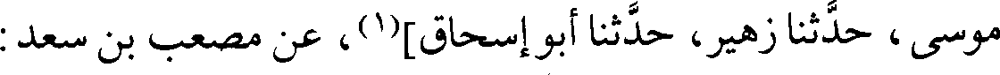
موسى، حدثنا زهير، حدثنا أبوإسحاق](1)، عن مصعب بن سعد:
File: 000629.gt.txt (if the image is defective, simply delete all Arabic text and the line will be excluded)
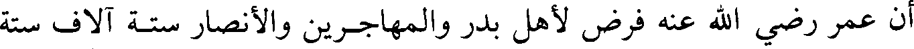
أن عمر رضي الله عنه فرض لأهل بدر والمهاجرين والأنصار ستة آلاف ستة
To Save: `Ctrl+s`, make sure to choose `Webpage, complete`!